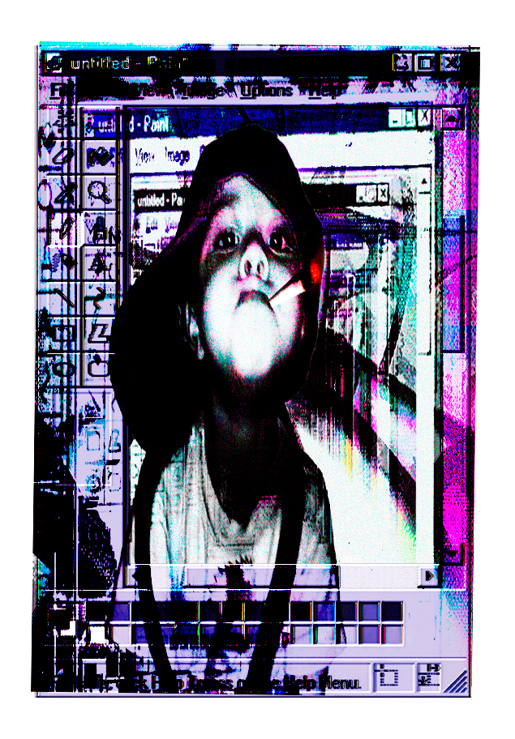
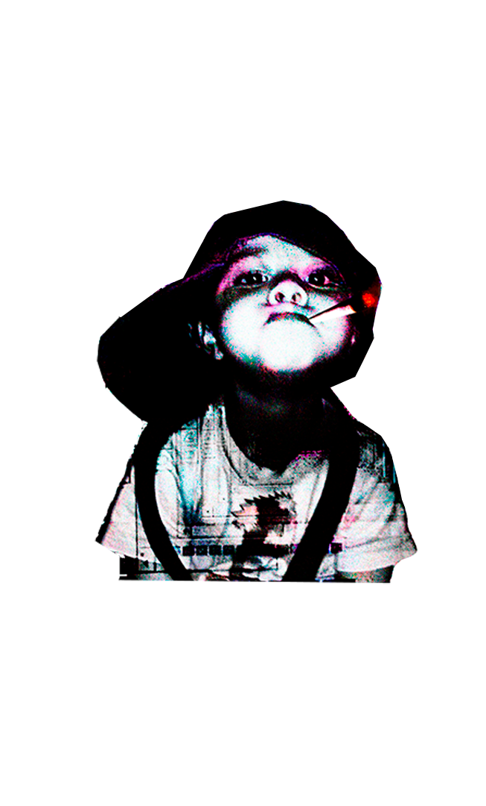

Sobre mí.
Hola, soy Ian / NNytro.
Sobre mí
Tengo 15 años, soy argentino y nací en Zárate. Me cuesta definirme en una sola disciplina: disfruto crear y probar cosas distintas.
Lo que hago
En mi portfolio pueden ver dibujos, edición de imagen y video, portadas musicales, diseños de menús, renders, modelos 3D en Blockbench y Blender, skins. También hago música y escribo.
Me gusta mucho todo lo audiovisual. En mi Instagram se puede ver cuánto me gusta la fotografía.
Me gusta editar imágenes y videos, y disfruto mucho hacer de todo.
Cómo trabajo
Me gusta estar haciendo algo, por más mínimo que sea; siempre busco algo para no aburrirme. Si me estreso haciendo algo, intento esforzarme más para terminarlo, aunque a veces me tarde un poco.
Objetivos y este espacio
Me gustaría poder juntar el dinero para viajar a Argentina a finales de 2026.
Creo que esta página refleja un poco mi esencia y mi trabajo. Espero que les gusten mis trabajos.
pasá sobre la imagen para acercarte